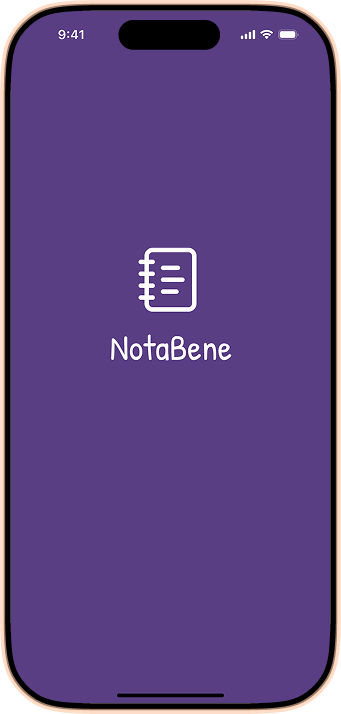

NotaBene: minimal note-taking app
Role: UI Designer · Duration: August 2025 · Tools: Figma, Miro, Google Forms, Canva
Client's Request
- a note-taking app in the style of “less, but better”
- needed urgently
- wireframes to be shaped by functionalism, meaning they’re clean and simple
- design with “less is more” in mind
Problem • Objective • Solution
Problem
Existing note apps are cluttered or overly complex for quick note-taking.
Objective
Create a functional MVP note app, focusing on clarity and usability.
Solution
A minimalist app where every UI element serves a clear purpose.

Discover – Understanding the challenge
- Competitor analysis (Samsung Notes, Apple Notes) to understand common patterns
- Identification of core user needs: quick note creation, readability, and easy retrieval
Define – Narrowing the scope
- Functionality over features
- 5 core screens: Welcome, Home, Add Note, Note Detail, Settings
- Functional goals for each screen (e.g. Home = overview of notes, Add Note = frictionless input)
Develop – Exploring solutions
- Low-fidelity wireframes to visualise structure
- Greyscale high-fidelity wireframes
Deliver – Designing the solution
- A cohesive UI system with colour styles, typography, and components
- A style guide (colours, text styles, buttons, cards, toggles)
- Light mode + dark mode
Hi-fi Wireframes
Style Guide
Mobile Screens

Prototyping
Insights & learnings
- Designing within constraints clarified priorities (MVP mindset)
- Functionalism taught me how to strip away non-essentials.
- Variables and theming elevated the system thinking aspect.